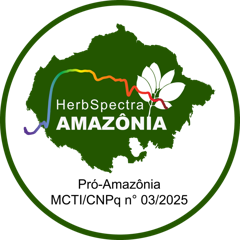
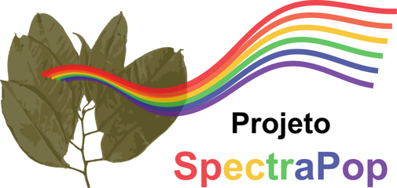
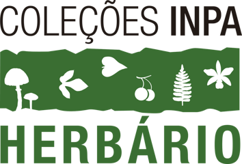
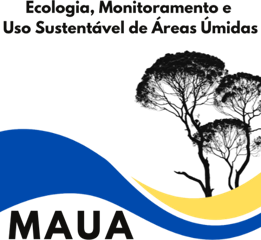
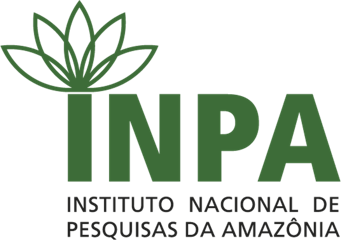
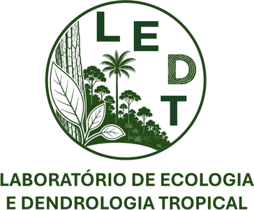
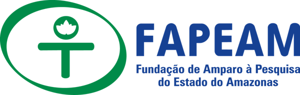
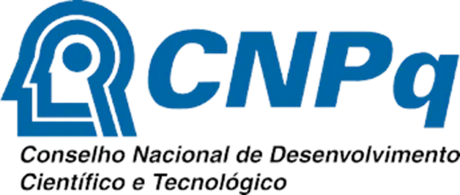
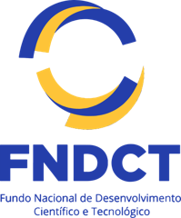
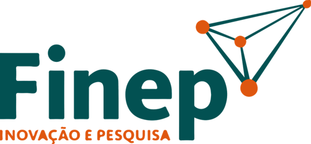

La red
Herbarios que aprenden juntos
HerbSpectra-Amazonía reúne herbarios de Brasil, Bolivia, Colombia, Ecuador y Perú en torno a una misma idea: dar a cada colección botánica de la Amazonía la capacidad de identificar plantas también a través de la luz.
Qué es un herbario espectral
Un herbario guarda exsicatas: plantas prensadas, secas e identificadas por especialistas, junto con el lugar y la fecha de su colecta. Un herbario espectral añade a cada exsicata una nueva información: su espectro, es decir, la forma en que la hoja refleja la luz en el infrarrojo cercano.
Ese espectro se mide en segundos, con un equipo portátil, sin cortar ni dañar la muestra. Como depende de la química y de la estructura de la hoja, funciona como una firma. Reunidos en gran número y medidos de la misma manera, estos espectros ayudan a reconocer especies, a revisar identificaciones y a estudiar la diversidad de la flora.
La identificación correcta de las especies es la base de todo: de la conservación al manejo forestal, de la restauración a la bioeconomía.
En la Amazonía, esta tarea es especialmente difícil. Hay miles de especies de árboles, muchas parecidas entre sí y colectadas sin flores ni frutos. Los herbarios y la taxonomía tradicional siguen siendo insustituibles, y la espectroscopía llega para sumar: es rápida, económica, no destructiva y cualquier equipo de herbario puede aprenderla.
Misión, visión y cómo trabajamos
Misión
Formar personas y fortalecer los herbarios amazónicos para que lean, guarden y compartan la información espectral de sus colecciones.
Visión
Una Amazonía en la que cada herbario pueda identificar sus plantas también por la luz, con protocolos comunes, datos estandarizados y gente de la propia región al frente.
Cómo trabajamos
En red, con equipos portátiles de bajo costo, un único protocolo internacional y formación presencial dentro de cada herbario.
Objetivos
- Consolidar una red de herbarios espectrales en la Amazonía, conectando instituciones de Brasil y de los países amazónicos vecinos.
- Formar personas en espectroscopía vegetal, taxonomía y análisis de datos, con cursos en línea, talleres presenciales y seminarios abiertos.
- Estandarizar la lectura espectral de exsicatas, adoptando el protocolo internacional del grupo iHerbSpec en todos los herbarios.
- Medir espectros en las colecciones regionales, abarcando la diversidad taxonómica y geográfica de la flora amazónica.
- Construir una base de datos espectral estandarizada, bien curada y vinculada a la información de cada exsicata.
- Probar modelos computacionales, incluido el aprendizaje automático, para apoyar la identificación de especies.
Herbarios de la red
Diez herbarios conducen el trabajo: cinco en Brasil y cinco en países de la Organización del Tratado de Cooperación Amazónica (OTCA). Siglas según el Index Herbariorum.
Socios internacionales y de apoyo
Instituciones del grupo iHerbSpec y socios que apoyan las capacitaciones, la estandarización de los protocolos y el análisis de los datos.
De dónde venimos
HerbSpectra-Amazonía amplía la experiencia de SpectraPop, proyecto financiado por la FAPEAM que desarrolló y popularizó el herbario espectral de especies maderables en Amazonas, Brasil, con una serie de cursos entre 2025 y 2026. Ahora, la misma propuesta gana escala amazónica, con financiamiento de la Convocatoria Pública MCTI/CNPq nº 03/2025 – Pró-Amazônia (Brasil).









